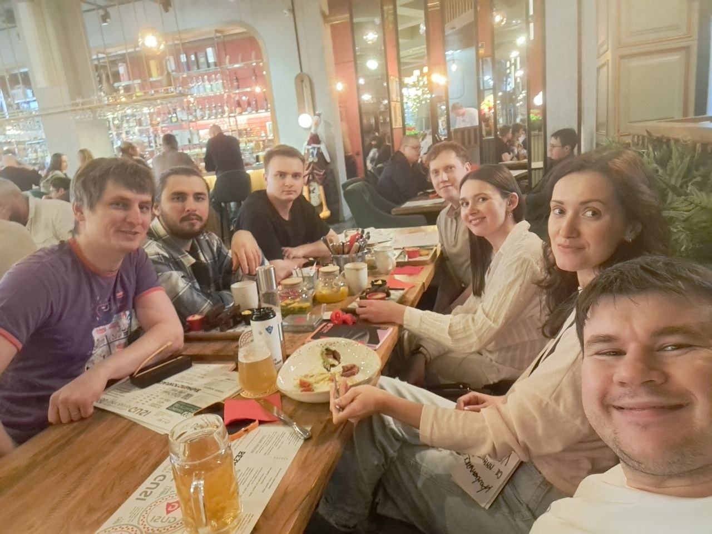
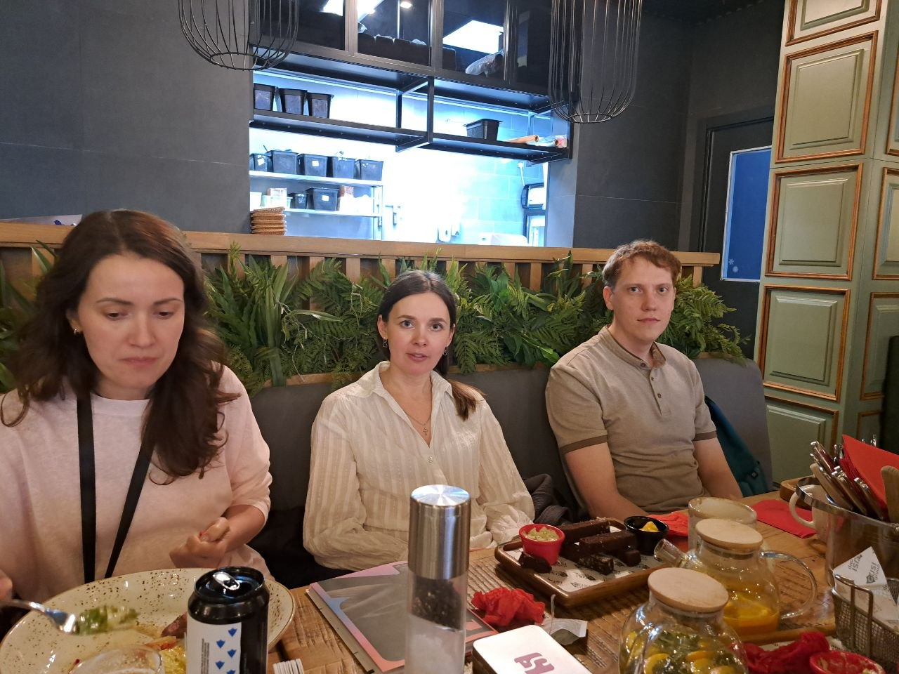

Ежегодная встреча технологических лидеров Фактуры. Обсуждаем тренды, инструменты и практики — определяем курс на следующий год.
Инструмент оценки технологий, который помогает командам принимать осознанные решения
Технологический радар — это формат, придуманный ThoughtWorks, который адаптировала команда ЦФТ под задачи продукта Фактура. Раз в год технологические лидеры собираются, чтобы честно оценить инструменты, платформы, языки и практики.
Каждая технология попадает в одну из четырёх зон: Adopt (берём в работу), Trial (пробуем), Assess (изучаем) или Hold (пока откладываем). Результат — живой документ, который помогает командам договориться о технологическом векторе.
Это не конференция и не обучение — это рабочая дискуссия среди людей, которые строят продукт каждый день.
Четыре квадранта, которые охватывают весь технологический стек команды
IDE, CI/CD, мониторинг, devtools — всё, что влияет на продуктивность инженера каждый день.
Облака, базы данных, брокеры сообщений и инфраструктурные решения, на которых стоит продукт.
Kotlin, Java, Python, React, Spring, gRPC — оцениваем, что развивать, а что выводить из стека.
Архитектурные паттерны, процессы разработки, способы работы с техдолгом и качеством кода.
LLM в разработке, AI-ассистенты, автотестирование, генерация документации — тренды, которые нельзя игнорировать.
Подходы к безопасной разработке, DevSecOps, управление зависимостями в финтех-контексте.
Структурированная дискуссия, которая заканчивается конкретными решениями
Участники заранее предлагают технологии и практики для обсуждения — из личного опыта или внешних трендов
Живое обсуждение каждой номинации: плюсы, минусы, реальный опыт применения в Фактуре
Коллективное решение — куда попадает технология: Adopt, Trial, Assess или Hold
Результаты фиксируются в виде радара — живого документа, к которому команды обращаются весь год
Технологии обсуждаются лучше за хорошим столом


Все команды двигаются в одном направлении — меньше расхождений в стеке, проще ротация и онбординг
Технологические решения принимаются снизу вверх — те, кто пишет код, определяют инструменты
Хайп отфильтровывается реальным опытом команды. Берём только то, что действительно работает в наших условиях
Hold-зона помогает осознанно выводить устаревшие технологии — без срочных рефакторингов и внезапных рисков
Техрадар — открытое мероприятие для технических специалистов ЦФТ. Следи за анонсами следующего выпуска.
ЦФТ — Центр Финансовых Технологий
Новосибирск
Фактура
factura.ru
Ежегодно
Следи за анонсами